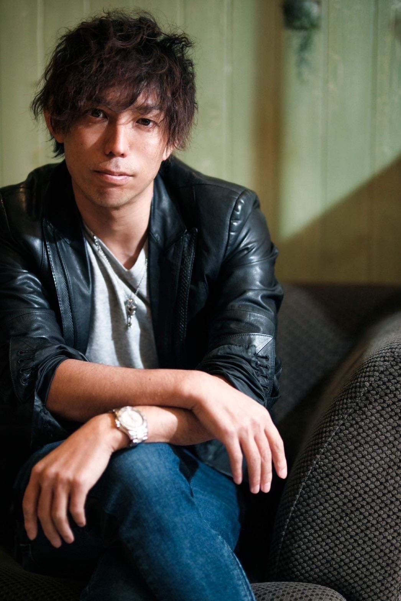

6つの質問に答える
先頭に立つ、愛で包む、ワクワクで動かす、頼って力を引き出す。あなたの傾向を整理します。
ENROLLMENT｜4 TYPE SURVEY
6つの質問で、あなたらしい人の巻き込み方を整理します。診断結果から、仲間と成果をつくる次の一歩を見つけてください。
 TAKASHI HOSONO / ENROLLMENT
TAKASHI HOSONO / ENROLLMENTHOW IT WORKS
先頭に立つ、愛で包む、ワクワクで動かす、頼って力を引き出す。あなたの傾向を整理します。
あなたらしい巻き込み方の強みと、気をつけたいクセが分かります。
結果を、仲間と成果を生み出す力へ変えるEnrollment無料3日間をご案内します。
START SURVEY
どの選択肢も、その人らしい巻き込み方の表れです。迷った場合は、現在の自分に最も近い答えを選んでください。
THE PROMISE
事業が伸びるほど、判断も実行も経営者ひとりに集まりやすくなります。
エンロールメントは、人を説得する技術ではありません。仲間自身が「この未来へ一緒に行きたい」と思い、当事者として動ける関係をつくるリーダーシップです。
診断結果の先で、その力を組織の現場へ持ち帰る方法を3日間で学びます。
FREE 3 DAYS
人を動かそうとする前に、まず見直すべき関わり方を扱います。
未来を共有し、相手の意思決定を変える言葉と構造を学びます。
学びを現場へ持ち帰り、明日から試す行動へ落とし込みます。
オンライン開催｜視聴期限付きアーカイブあり｜申込み特典PDF付き
LECTURER

17店舗
約400名
系列を含む17店舗、約400名の組織を率いる現場の実践者。
美容院事業、美容コンサルティング、ビジネスコンサルティングを展開。
診断結果の先にある「仲間が当事者として動く組織」を、机上の理論ではなく現場で実践してきました。
美容院事業を通じ、人が集まり続ける組織を運営。
美容・ビジネスの現場で、事業と組織の両面を支援。
AFTER YOU APPLY
オンライン参加に必要な情報をお届けします。
ライブ理解を深めるPDFテキストをプレゼントします。
当日参加できない場合も、視聴期限付きで確認できます。
最終日には、希望者へ次のステップをご案内します。
オンライン・無料。まずは3日間から始めてください。
FAQ
無料で参加いただけます。
すべてオンラインで開催します。Day1・Day2は各60分、Day3は90分です。
視聴期限付きアーカイブをご案内します。
参加案内に加え、申込み特典としてライブ理解を深めるPDFテキストをプレゼントします。